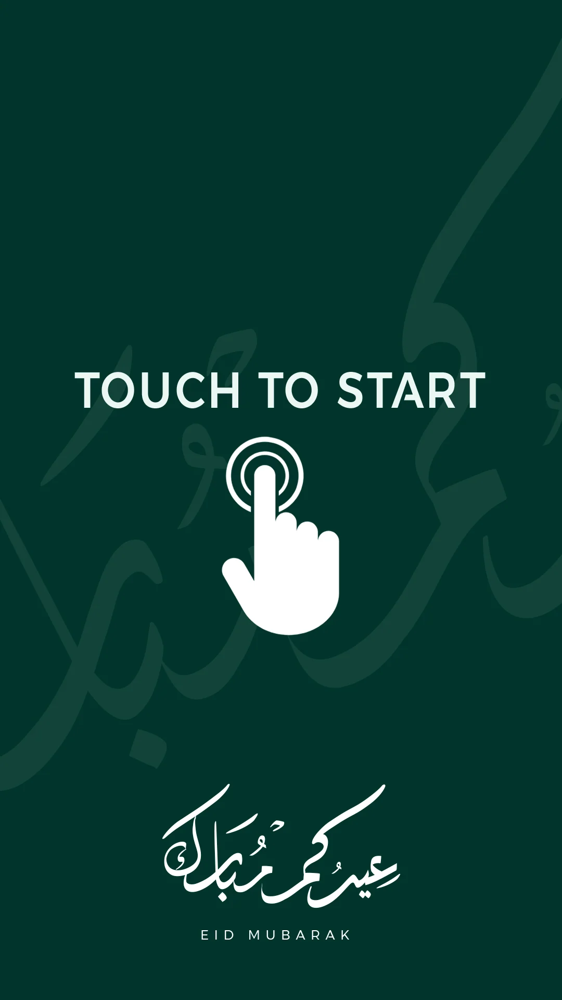

Tall touch-entry layout
Selected deck text identifies three mirror-pyramid versions and photobooth front/back views; native PSD and motion sources are retained.
A clear first action for a reflective spatial concept.
Explore the story
Pair a minimal entry screen with several possible booth forms.
The portrait screen uses a touch instruction and hand symbol over a calligraphic pattern. Presentation views explore three mirror-pyramid versions and front/back arrangements.
Selected deck text identifies three mirror-pyramid versions and photobooth front/back views; native PSD and motion sources are retained.
The portrait screen places a clear touch instruction and hand icon below the identity, with a subtle calligraphic pattern in the background.
A separate presentation compares three mirror-pyramid versions and front/back photobooth views.
Explore the complete compositions and interface states. Select any image for a closer look.
Structure, interaction and visual decisions that give the work its character.
RolePortrait UI, identity adaptation and concept presentation; confirm booth geometry and motion contribution.
AssetsCredit supplied identity, calligraphic pattern, booth models and source motion. No participant capture output is included.
StatusScreen/concept scope; final geometry authorship, camera workflow and fabrication unverified.